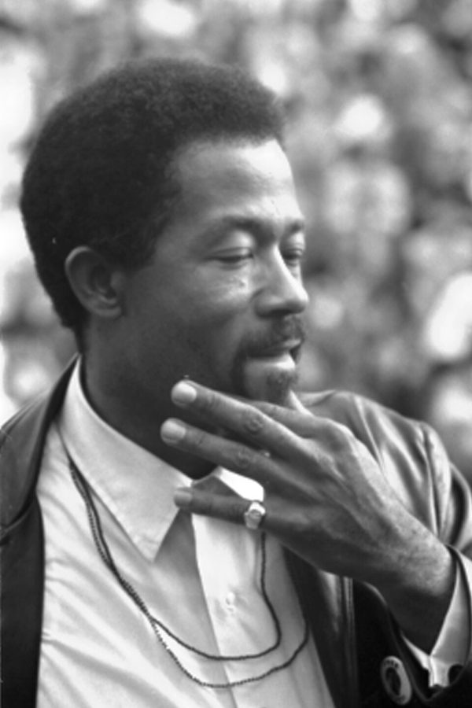
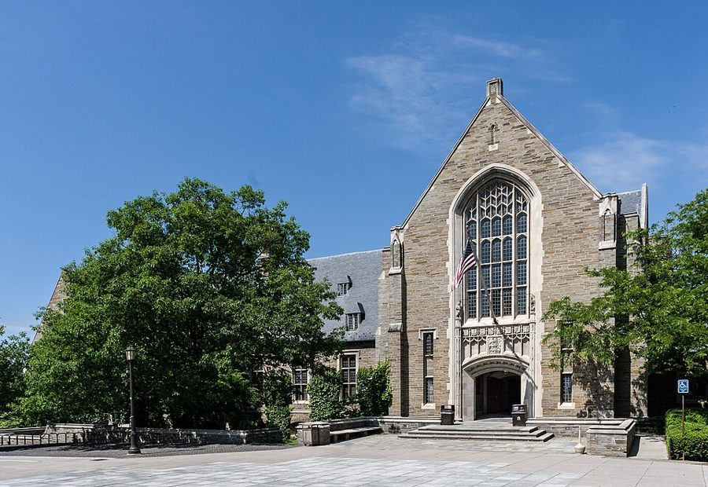

这一页在做什么
接着上一页：1968 年夏天他辞了康奈尔的教职，辞呈第二年 6 月才生效，论文也答辩完了。这一页他三十八岁，是在康奈尔的最后一个学年。十一封信，十封是他写的，一封是写来的圣诞卡（书把卡上印的字和手写的话分开排）。三件事绞在一起：找下一份工作，校园里的风潮，没解决的婚姻。
读的时候留意同一件事他对不同的人怎么讲：对姐姐，对老室友，对芝加哥的两位老师，对报纸。
1968.10 12 1969.2 4 6
康奈尔，最后一个学年
UCLA
12 月拿到博士学位
4 月 19 日占楼
校长辞职
Martin Rogge Cliff Mary Nort 书店 Friedman George 纽约时报
本站示意图。一个圆点是一封信，按信上的日期画。空心的那个是 Martin 写来的圣诞卡，卡上没有日期，书里只说是圣诞假期。占楼和校长辞职的日期是史实，书里没有写具体哪一天。占楼之前的信多在谈找工作，之后的四封都绕不开康奈尔。
这一页的串场文字比信长。信大多只印了一段，前因后果都在信前信后的 2007 年的段落里。最后两段串场没有信，讲的是 1969 年夏天开车去洛杉矶。
收信人和提到的人
这一页有九个收信的对象，其中两个不是人，是一家书店和一份报纸。写来的只有 Martin 的一张圣诞卡。
Martin Martin Bronfenbrenner · Carnegie-Mellon 大学的经济学家 · 有一张是他写来的 上一页两人还在为降低录取标准争论，称呼是 Professor Bronfenbrenner。现在熟了，他寄去自己的博士论文。圣诞卡上 Martin 告诉他：有人在系主任们面前说他的坏话。
Professor Rogge Benjamin Rogge · Wabash College 的经济学教授 不认识的人。Rogge 来康奈尔演讲，他不在，写信去要讲稿。后面的串场文字说，这封信后来引出了他自己写种族经济学的念头。
Cliff 他的 nephew · 书里只有名 晚一辈的年轻人。英文的 nephew 不分侄子和外甥，书里没说是哪一边的。Cliff 来信说年轻人也在怀念从前，他回信谈学生和捧学生的大人。
Mary Mary Frances · 亲姐姐 串场文字明说这是姐姐。给她的信讲找工作的难处，用的是家常话，没有一句行话。
Nort Norton · 哈佛时的室友 两封。2 月那封开头就是一个拿自己姓氏开的玩笑；6 月那封讲在校董会作证。牢骚和笑话照例都留给 Nort。
Mr. Friedman Milton Friedman · 芝加哥大学教授 他读博时的老师。串场文字说，Friedman 不许论文写得啰嗦。这封信报告去向：留在学界，去 Brandeis。
George George J. Stigler · 芝加哥大学教授，他的论文导师 上一页起已经直呼其名。同一天写的信，给 Friedman 的讲自己的决定，给 Stigler 的讲康奈尔的教员怎么议论那场风波。
Perkins 只被提到 · 康奈尔校长 James A. Perkins 书里只印了姓。给报纸的信骂的是 the Perkins administration，也就是校方；给 Nort 的信说的是他下台。
Eldridge Cleaver 只被提到 · 黑豹党的头面人物 Martin 的卡片拿他作比。见背景。
Bernard Anderson 只被提到 · 在 Wharton School 教书的老朋友 他想离开学界时，这位朋友在电话里劝他留下。回忆录里只叫 Bernard，是劳工部时期的同事。
Joseph S. Berliner 只被提到 · Brandeis 经济系主任，研究苏联经济 串场文字说他给 Berliner 写了信，但那封信书里没有印。
Jean 和 Little John 妻子和儿子 Jean 这个名字只在 2 月给 Nort 的信里出现一次，串场文字里一直是 my wife。儿子 John 这一年四岁上下，重新开口说话。
Milton Friedman，1976 年，比这封信晚七年。UPI，公有领域，维基共享资源 称呼在变。 Stigler 从上一页的 1968 年 9 月起是 Dear George；Bronfenbrenner 从 Dear Professor Bronfenbrenner 变成了 Dear Martin；只有 Friedman，到 1969 年 5 月还是 Dear Mr. Friedman。Martin 的落款是 Martin B.，称呼他 Tom。
这个 Mary 是姐姐。 60 年代前几页有一位叫 Mary 的黑人研究生，不是这一位。另外两封信没有具体的收信人：Dear Sirs 是写给纽约一家书店的订书信，To the Editor 是写给《纽约时报》读者来信栏的。
信件地图
一条是一封信。斜体字是那封信正文开头的几个词，照这一版屏幕上的字抄的，在 Kindle 里搜它就能跳过去。编号是黄底的，是别人写来的信；这一页有一封，是 Martin 的圣诞卡，印好的贺词和手写的附言合成一条。「留意」只给方向，答案在信里。
You mentioned some time back 1968 年 10 月 1 日 · 写给 Martin 留意：秘书那句话是嫌什么；信后的串场文字说论文为什么这么短。I've been following your trail 没写日期，1968 年圣诞假期 · Martin 写来 留意：印好的三行贺词是玩笑，手写的才是正事。Martin 猜的原因，他信不信。I was out of town when 1968 年 12 月 27 日 · 写给 Professor Rogge 留意：他要的是什么；最后一句的惊讶，后来落到了谁身上。The generation gap being what it 1969 年 1 月 30 日 · 写给 Cliff 留意：他恼的主要是哪一种人；加了大写和定冠词的那两个词是在学谁说话。It has been a long time 1969 年 2 月 13 日 · 写给 Mary 留意：聘书很多，他为什么说大多数接不得；学校和学生各指望他做什么。These are certainly times that are 1969 年 2 月 23 日 · 写给 Nort 留意：第一句是个双关；两处 on its way，一处是坏事，一处是好事。Please send me a copy of 1969 年 3 月 22 日 · 写给纽约一家书店 留意：全信三句。看书名，再看后面那一句串场。After a great deal of soul-searching 1969 年 5 月 28 日 · 写给 Mr. Friedman 留意：他差一点去了哪里；confrontation 是谁提出来的，结果怎样。If you think the well-publicized events 1969 年 5 月 28 日 · 写给 George 留意：加引号的两个词是谁的口头禅；最后一句的 untold story 讲的是哪些学生。Mere stupidity may cause some problems 1969 年 6 月 1 日 · 写给《纽约时报》编辑 留意：cleverness 在这里是不是好话；哪一句后来上了报。I would love to believe that 1969 年 6 月 16 日 · 写给 Nort 留意：他怎么估计自己那份证词的分量；招生委员会反对那两个学生的理由。
背景：作者默认你知道的事
黑豹党和 Eldridge Cleaver

Eldridge Cleaver，1968 年。U.S. News & World Report Magazine staff photographer: Marion S. Trikosko，公有领域，维基共享资源 黑豹党（Black Panther Party）1966 年成立于加州奥克兰，主张黑人武装自卫，成员公开持枪。Cleaver 是党内管宣传的负责人，1968 年出了文集 Soul on Ice ，同年被一个左翼小党提名竞选总统，年底逃到国外。
1968 年的美国人听到这个名字，想到的是最激进的黑人。Martin 的意思是：有人把你说成了这一路的人。
辞了职再找工作
美国大学的聘任按学年走，秋天开学。他 1968 年 8 月递的辞呈到 1969 年 6 月才生效，中间整个学年都在找下一个位子。招聘靠系主任之间通气，靠推荐信，所以一句传错的话能跟着人走一圈。
给姐姐的信里说，各校这时都急着要黑人教员。下图是他在信里提到的几个去处。
去处
信里怎么说
Wisconsin 大学
条件最好的一份。他听说那里的激进学生 已经给黑人教员列了名单
UCLA 的正式教职
系主任办公室出过炸弹。这时候去， 会被看成装点门面的那一个
别的几所大学
要的是一张黑人面孔， 指望他整天陪黑人学生开会
National Bureau
不在大学里的研究机构。 正要去上班，Brandeis 来了信
Brandeis
先和那里的黑人学生当面谈了两小时， 才接受
本站示意图，右边一栏都是他自己在信里和串场文字里的说法，是一方的说法。前三行见 2 月给姐姐和给 Nort 的信，以及最后的串场；后两行见给 Friedman 的信。UCLA 他只去教了一个暑期班。
1969 年春天的康奈尔

康奈尔的学生活动中心 Willard Straight Hall。1969 年 4 月被占的就是这座楼。Kenneth C. Zirkel，CC BY-SA 4.0，维基共享资源 这场风波 Odyssey 第 8 章讲过：校方答应了占楼学生的条件，教员先否决、后改票。日期是史实：4 月 19 日黑人学生占了这座楼，第二天带着枪走出来；校长 Perkins 5 月 31 日提出辞职。
这一页最后四封信都写在占楼之后：给两位老师的信在校长辞职前三天，给报纸的信在辞职第二天。
College Board 的 700 多分
College Board 是主办 SAT 的机构。SAT 是美国高中生申请大学时考的标准化考试，当时分语文和数学两科，每科最低 200 分、最高 800 分。700 多分在任何一所大学都算拔尖。
给 Nort 的最后一封信里，这个分数后面跟了一个感叹号。读到那里要知道它有多高，才明白他为什么觉得那场作证「最能说明问题」。
Brandeis 和 UCLA
Brandeis 校园里的 Usen Castle。他 1969 年秋天起在这所学校教书，那是下一个十年的事。Mike Lovett，公有领域，维基共享资源
Brandeis 在波士顿近郊，1948 年建校，规模小。他选它不是因为名气，是因为那里的黑人学生肯当面把话说开。
UCLA 的 Royce Hall，2019 年拍摄。1969 年夏天他在这所学校教暑期班。Beyond My Ken，CC BY-SA 4.0，维基共享资源 UCLA 是加州大学洛杉矶分校。最后一段串场说它的经济系是芝加哥学派的一个据点，同事在经济学上、在怎么看校园风潮上都和他合得来。这是下一个十年的伏笔。
Odyssey 里讲过这一段
这一学年在回忆录的第 8 章，最后那个夏天在第 9 章开头。Rogge 的手稿、儿子重新开口这两件事，两本书讲得一样，回忆录细得多。
要不要留在学界 Odyssey 第 8 章 回忆录讲的是他怎么打听：每到一校先找一位黑人教员，接电话的常是太太。信里多出来的是具体的地名和事：Wisconsin、UCLA 的炸弹、那份名单、差点去的 National Bureau。劝他留下的朋友，回忆录只叫 Bernard，这里有了姓。
去那一页 → 占楼之后 Odyssey 第 8 章 占楼的经过、教员改票、他照常上课，回忆录写得细，这本书只用一段串场带过。这里多的是当时的三封信，和校董会作证的细节。作证一事回忆录只有一句，没说证词里有什么，也没提 Perkins 下台。
去那一页 → 开车去洛杉矶的夏天 Odyssey 第 9 章（上） 回忆录讲了一路的地名、儿子学会认路牌、Walter Williams 找上门。这本书只有两段。帮忙找房子的人，回忆录说是本科时的朋友、如今在 UCLA 当教授；这里说是老朋友 Gloria，她和丈夫住在洛杉矶。两处也许说的是同一家人，本站照录。
去那一页 → Martin 的圣诞卡，订的那本书 回忆录没写 回忆录里没有 Bronfenbrenner 和 Cleaver 这两个名字，也没提系主任们听到的那些话。婚姻的事它几乎不谈，订书这封短信只在这本书里有。
这一版的错字
只收会让人读不懂、或者在 Kindle 里搜不到的。第一格是屏幕上的字，照抄的；第二格是本站有把握的原字。问号前多出来的撇号全书都有，见「开读之前」，这里不列。
屏幕上的字 应为 在哪 to write a hook on the subject to write a book 给 Martin 的信后面的串场：材料够写一本书 Eldridge Cleaver ll Eldridge Cleaver II Martin 的圣诞卡。罗马数字 II（二世）认成了两个小写的 l A brie!'note to a bookstore A brief note 订书信前面的那句串场 Divorce and Custodv.for Men Divorce and Custody for Men 订书信里的书名。搜 Custody 搜不到 I went hack to Brandeis I went back to Brandeis 讲 Brandeis 的那段串场 see inc in the fall see me in the fall 同一段的最后一句：学生说秋天见 accepted the otter from Brandeis accepted the offer 下一段。offer 这个词全书多次认错 situation at C omell situation at Cornell 给报纸的信前面的串场 through at ('ornell through at Cornell 信后面的长串场：Perkins 在康奈尔完了 because ol'an offer because of an offer 倒数第二段串场，这一段错字最多 recruit me lbr a regular recruit me for a regular 同一段。后面的 fbr an opening 也是 for little family henelitted little family benefitted 最后一段串场
这一页没有做成图片的脚注或信头。 honor of'giving 、outpost of' University 里的撇号是扫描的杂点，不是脚注号。破折号丢了的地方有两处把词粘在了一起：adultsincluding 是 adults—including，studentadministration 是 student-administration。倒数第二段的 had rebelled attempts 读不通，原字本站拿不准，意思是系主任顶回了要他聘一位黑人教授的要求。
词与短语
按信的顺序排，串场文字里的词条归到它后面那封信的组里。斜体小字是那句话里的几个词，照这一版屏幕上的字抄的（撇号是直的），在 Kindle 里搜它就能跳到那一句。单个的生词长按就能查，这里收的主要是词典帮不上忙的。
1968 年 10 月到圣诞 · 给 Martin，和 Martin 的贺卡
not stand for
… that he would not stand for a …
不容许
和「站」「代表」都无关。I won't stand for it = 我不吃这一套。后面加引号的 long-winded 是 Friedman 的原话：啰嗦。
senior honors thesis
… my undergraduate senior honors thesis at Harvard …
本科毕业的荣誉论文
想拿荣誉学位的大四学生要写的长论文。他的博士论文只有它一半厚，所以秘书会问那一句。
following your trail
… I've been following your trail, it …
一路跟在你后头
trail 是人走过留下的踪迹。他应聘过的那些系，Martin 后来都打过交道。
chairmen
… to convince suspicious chairmen that …
系主任们
大学里说 chairman，指 department chairman。聘不聘人，他们说了算。
give someone a bad press
… somebody gave you a bad press, or …
把某人说得很不堪
press 本指报刊上的评价。这里没有报刊，是私下的传话。Martin 给了两种可能，第二种是有人读错了推荐信。
1968 年 12 月 · 给 Professor Rogge
less charitable
… I was less charitable than Martin …
不像 Martin 那样往好处想
charitable 这里是「把人往好里想」，和慈善无关。他认为不是误读，是有人存心。
knife in the back
… the usual knife in the back, with …
背后捅刀
两个 usual 连用：这种事他认为不是头一回。
the story put out about me
… the story put out about me …
放出来的关于我的说法
story 是流言，put out 是散布。指 Douglass College 那一回，见「60 年代（二）」。
The Welfare State Against the Negro
… Welfare State Against the Negro …
福利国家与黑人作对
Rogge 的讲题。against 说的是「对……不利」：福利政策本想帮黑人，结果害了黑人。这是 Rogge 的论点，信里称它 very original。
along the same lines
… any articles along the same lines? …
同一个思路的
line 是思路，不是行。
1969 年 1 月 · 给 Cliff
too many irons in the fire
… had too many irons in the fire. …
手上同时在做的事太多
铁匠炉里同时烧着太多块铁，哪一块都顾不好。
the lecture circuit
… speaker on the lecture circuit, as …
巡回演讲的圈子
circuit 是一圈固定要跑的地方。美国的学校和社团常年花钱请人演讲，有人以此出名。
sit in on
… even sat in on one of his …
旁听
和这几年信里的 sit-in（静坐抗议）不是一回事。
to do with as I wished
… to do with as I wished. …
随我怎么处置
with 后面省了 it（那份手稿）。Rogge 把没写完的书稿整个送给了他。
reach a crescendo
… violence reached a crescendo in 1969 …
闹到最凶
crescendo 是乐谱上的「渐强」，口语里拿来说顶点。
being what it is
… The generation gap being what it is, …
既然……就是这个样子
固定句式：X being what it is ，意思是 X 的情形你我都清楚。给 Nort 的信里又用了一次，说的是学界。
drivel
… and other such drivel. Actually I …
胡话
前面那句 the awakening of committed youth （有担当的青年觉醒了）是当时报刊上的套话，他用这个词一笔勾掉。
put out with
… not so much put out with the …
对……恼火
和上面的 put out （散布）不同，这里是形容词。not so much A as B ：恼的主要不是年轻人，是 B。
hangers-on
… with their adult hangers-on who get …
跟在后头沾光的人
单数 hanger-on。他指捧着学生的成年人，串场文字说其中有不少教员。
line one's pockets
… or their pockets lined from them. …
往自己兜里捞钱
line 是给衣服加衬里：拿钞票衬口袋。前半句的「给电池充电」说的是从学生身上找回劲头。
The System
… the great struggle against The System. …
「体制」
大写加定冠词，是学激进学生的腔调。后面的 The Establishment（当权的那帮人）同理。两处他都加了 something called ：一个叫做什么什么的东西。
get around
… going to be gotten around by …
绕过去，躲掉
这句的主语很长：几千年来哪种制度下都有的苦处。他不信换个「体制」就能躲掉。
optimistic beyond words
… seems optimistic beyond words. I guess …
乐观得没法说
不是夸。下一句的 naive optimism 把话挑明了。
hard to take
… that is so hard to take, including …
叫人受不了
take 是忍受。
the general cussedness of man
… the general cussedness of man and …
人天生的那股别扭劲
cussed 是 cursed 的土话变体，指犟、存心作对。他说革命者做的事有不少只是这个，和理想无关。
1969 年 2 月 · 给 Mary
black faces
… anxious to have black faces on the …
黑人面孔
说 faces 不说 scholars：要的是脸。注意用词，这封信写 black，同年 5 月给 Stigler 的信里还是 Negro，两个词正在交替。
Guru in residence
… sort of Guru in residence for …
驻校导师
仿 writer in residence （驻校作家）造的。guru 是印度教的上师，60 年代的美国人拿它叫精神导师。他是在挖苦这个差事。
fritter away
… to fritter my time away in …
零零碎碎地耗掉
后面的 in bits and dabs 是一点一滴地。
public relations
… bits and dabs on public relations. …
应酬，哄人高兴
不是公关部门。他这几年一直拿这个词说老师讨好学生，上一页给 Nort 的信里就有。
hell-raising
… the noise and hell-raising on campus …
闹事
raise hell 是大吵大闹。
not amount to a hill of beans
… won't amount to a hill of beans …
一文不值
a hill of beans 是一小堆豆子。后半句是关键：学生赢了输了都一样。
1969 年 2 月 · 给 Nort
times that are trying Sowell
… certainly times that are trying Sowell. …
这年头真是在考验 Sowell
双关。Thomas Paine 1776 年的小册子 The American Crisis 开头是 These are the times that try men’s souls （这是考验人的灵魂的时代）。Sowell 和 soul 谐音。try 是考验、折磨。
go out the window
… rationality has gone out the window and, …
荡然无存
a difference of opinion
… he had a difference of opinion with …
意见不合
往轻里说。前半句是办公室挨了炸，后半句轻描淡写地说「有点分歧」。方括号里的 at UCLA 是编书时补的。
on its way
… but is obviously on its way. …
正往那一步走
这里说 Wisconsin 迟早也会那样。下一段说儿子 he is on his way ，是好的意思：上路了。
I am reliably informed
… I am reliably informed that the …
据可靠的消息
公文腔，不说是谁告诉的。
Uncle Tom
… list of “Uncle Toms” among the black …
对白人顺从的黑人（骂人话）
出自 Stowe 1852 年的小说 Uncle Tom’s Cabin 里的老黑奴。到这时已是黑人之间很重的指责。引号表示这是那些学生的叫法。
it takes very little to qualify
… it takes very little to qualify. …
不用做什么就够格上榜
qualify 本来说够资格拿到好东西，这里说够资格挨骂。
jinx
… Without wanting to jinx things, I …
说破了招来晦气
美国人的迷信：好事说早了会黄。
1969 年 3 月到 5 月 · 给书店，给 Mr. Friedman
Payment is enclosed
… Payment is enclosed. Thank you. …
书款随信附上
邮购的套话，信封里夹着支票。称呼 Dear Sirs 是当年写给商号的格式，现在不这么写了。
cave
… academic administrators not only caved, they …
屈服
即 cave in ，本义是塌方。同一句的 abject surrender 是低三下四的投降。这一段是 2007 年的话。
amenable to reason
… found them more amenable to reason than …
讲得通道理
mealymouth
… wholly unlike the mealymouth administrators at …
说话含含糊糊、不敢直说的
通常写作 mealy-mouthed。和它相对的是前一句的 blunt。
soul-searching
… a great deal of soul-searching, I …
反复掂量
ask for a confrontation
… I asked for a confrontation with …
主动要求当面对质
句首的 Reversing current trends 是玩笑：这年头都是学生找校方 confrontation，他倒过来，自己找上学生。
which is more than can be said of
… which is more than can be said …
这一点，……可就谈不上了
拐着弯贬别处。连用两次，第二次加码，落在康奈尔头上。
1969 年 5 月 · 给 George
responsive
… without being “responsive” and “re-structuring,” this …
「积极回应」
本是好词，这里是校方和同事的口头禅：学生一提要求就应。re-structuring 是「改组」。他拿芝加哥作反例：没做这两样，反而太平。
intellectually chic
… worse-not intellectually chic. The great …
在读书人里算时髦
chic 是法语借词，时髦。短横是破折号：或者，更糟，不够时髦。
1969 年 6 月 · 给《纽约时报》编辑
beyond compare-and beneath contempt
… has been beyond compare-and beneath contempt. …
无人能比，也不值一哂
两个成语对着用，beyond 对 beneath。beneath contempt 是连被人看不起都不配。前半句像夸，后半句翻过来。
a veritable weathervane
… been a veritable weathervane following the …
一只不折不扣的风向标
veritable 用来给比喻加重。风往哪吹它往哪转。
1969 年 6 月 · 给 Nort
the race card had been trumped
… The race card had finally been trumped. …
种族这张牌终于被压了下去
纸牌的说法。play the race card 是拿种族说事；trump 是出王牌压住。上一句的 trump cards 是校方的王牌：说批评者其实是冲着黑人学生来的。
ditch
… on the decision to ditch Perkins, but …
甩掉
口语。本义是把东西扔进沟里。
drive nails into the coffin
… few extra nails into the coffin. …
在棺材上多钉了几颗钉子
成语是 a nail in the coffin ：促成某事完蛋的一击。他说自己只是多钉了几颗，棺材本来就要盖上了。
College Board scores in the 700s
… College Board scores in the 700s! …
SAT 考了七百多分
见背景。in the 700s 是七百到七百九十几。
doctrinaires
… The doctrinaires who dominate the committee …
认死理的教条派
他们嫌那两个学生 middle class 。信里说这指的是想法，不是家境，下一句就是其中一家的家境。
a model disaster
… has been a model disaster and …
一场堪称样板的灾难
model 作形容词是「模范的」，平时配好东西（a model student ）。
object lesson
… a useful object lesson for higher …
活教材
object 是实物：拿实物上的一课。多指反面的。
maudlin eulogy
… an almost maudlin eulogy to Perkins, …
近乎肉麻的颂词
eulogy 多指悼词。签名的这位同事，私下说起 Perkins 从来只有厌恶。
token black
… branded as a token black, given …
装点门面的那一个黑人
token 是象征性的：聘一个，表示「我们也有」。brand 是打烙印。
值得停下来的句子
… this is not a good time for a man to be rational and black and on a university campus.— 1969 年 5 月 28 日给 Mr. Friedman 的信。本站译：……眼下这个时候，一个人又讲理、又是黑人、又待在大学校园里，日子不好过。
三个条件用两个 and 连着，不用逗号，一个一个往上加。缺了任何一个都没事：不在校园里没事，不是黑人没事，不较真也没事。not a good time 是往轻里说。
这是半句话，前半句说的是决定：他还是留在学界。先说留下，再说留下有多难，这是写给老师的报告的写法。同一件事他对姐姐说的是「聘书很多，大多接不得」，对 Nort 说的是博士学位「几乎一文不值」。
The Perkins administration has been a veritable weathervane following the shifting cross-currents of campus politics.— 1969 年 6 月 1 日给《纽约时报》编辑的信。本站译：Perkins 当局活脱脱是一只风向标，跟着校园政治里变来变去的乱流转。
前一句先立靶子：人人都说，要防校园骚乱，校方得 responsive。这一句回答：康奈尔的校方够 responsive 了，风一变它就转。结论没写出来，留给读者自己得出。
串场文字说，他没来得及把信寄出去，就交给了上门的记者，这句话被引在《纽约时报》头版的报道里。书里说这是他第一次公开评论康奈尔的事。到 1968 年底，他在种族这个题目上还一个字也没发表过。
检查一下理解
先在心里答，再点开。答错的那题，回书里把那封信再读一遍。
1. 圣诞卡上那句「让他们相信你不是 Eldridge Cleaver 二世」，是谁写给谁的？是在挖苦他吗？ 是 Martin Bronfenbrenner 写给他的，不是挖苦，是报信兼帮忙：Martin 在替他向各校的系主任解释。Martin 猜是有人读错了推荐信。后面的串场文字里，他自己不这么想，认为是有人存心。
2. 给 Nort 的信开头说 times that are trying Sowell，这个 trying 是「正在尝试」吗？ 不是，是考验、折磨。他在套 Thomas Paine 的名句「这是考验人的灵魂的时代」，把 souls 换成了谐音的自己的姓。意思是这年头真够他受的。
3. 给 Cliff 的信里，他最恼火的是闹事的大学生吗？ 不是。他说学生的许多错在那个年纪很自然，几百年来都有。他恼的是围着学生转的成年人，这些人从学生身上找劲头、捞好处，还把不容异见和暴力说成情有可原。
4. 给 Friedman 的信说他 asked for a confrontation，是他去和 Brandeis 的黑人学生吵了一架吗？ 不是。当时都是学生找校方对质，他反过来主动约学生当面谈，把自己来了做什么、不做什么说在前头。谈了两小时，他的结论是这里可以谨慎地乐观。串场文字说，临走有学生伸手和他握手。
5. 给报纸的信说，Perkins 当局的 cleverness 无人能比。这是在夸校方聪明吗？ 不是。他的意思是：光是笨，惹不出这么大的祸，得有某一种小聪明才行。紧接着的后半句就翻了脸，说它连被人看不起都不配。
6. 6 月给 Nort 的信里，招生委员会有人反对录取两个考了七百多分的黑人学生。反对的理由是什么？ 不是成绩，是嫌他们「中产阶级」。信里说这指的是想法上的，不是钱上的，还举了其中一个学生的家境作反证。在他看来这说明那个委员会要挑的是某一种黑人学生，不是最能读书的。这是他转述的一位委员的证词。